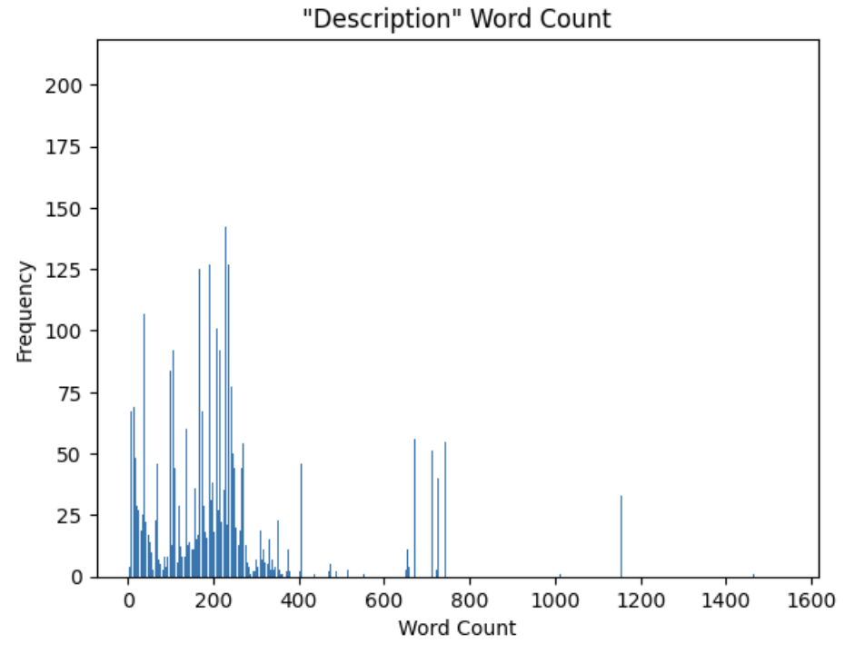

<br>
### "Description"
##### Motivation
Over the course of the summer, I spoke to Belle Lipton extensively about the 11,000+ datasets the collection keeps and the corresponding metadata. One of our shared questions about the metadata was focused on the descriptions, housed in the `dc_description_s` column. We pondered what the differences were between the many descriptions we had of datasets – their tone, their descriptive power, their focuses.
##### Exploratory analysis
I was able to get started on some exploratory analysis. I found that as expected, most descriptions were relatively short – 1459 characters, or 224 words on average. The standard deviation for word-count is quite high, sitting at 192. The longest description was 1,538 words long, and the shortest was 4 ("Global oil pipeline locations")!
Below you can find a bar plot displaying the word counts of the descriptions:

There is a large clustering in the range of 50 to 260, some volume in the 650 to 750 range, and just a few datasets with descriptions longer than 1,000 words.
Looking at the tail ends, I find that the datasets with the 20 shortest descriptions are all from 1996 through 2009, and all concern King County in Washington, Massachusetts, or Europe. However, the datasets with the longest descriptions all come from 2002 and the "UA Census Hawaiian Home Lands" as well as "UA Census American Indian Reservations".
These preliminary findings are fascinating, and given more time, I'd spend weeks digging into exactly what datasets see certain patterns in their descriptions, whether that be in tone -- sentiment analysis would be a great next step for exploration here -- or length or keywords used.
The [methods for this exploratory analysis](https://github.com/HarvardMapCollection/may-crane-23-documentation/blob/main/description_exploration.py) can be found on [our documentation site](https://github.com/HarvardMapCollection/may-crane-23-documentation/tree/main).